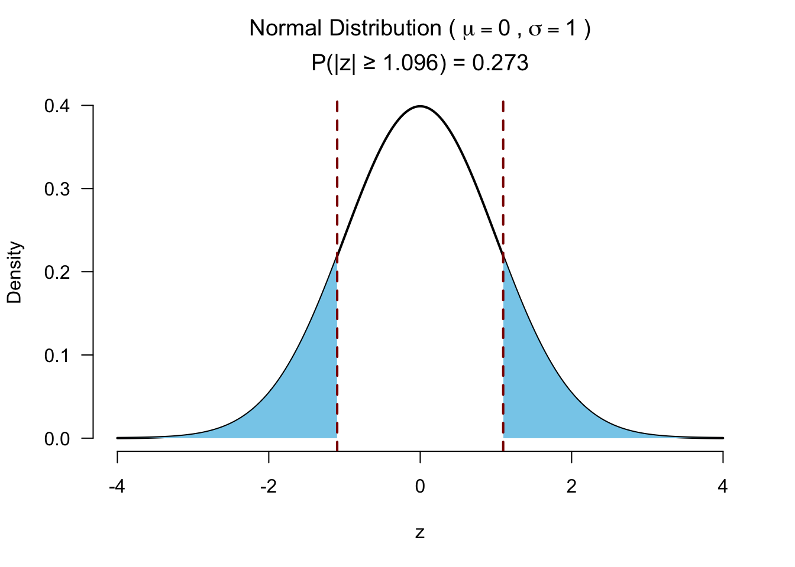

20. Non-parametric tests
In this lecture we aim to:
- Repeat some assumptions
- Introduce rank-based methods
- Look at rank-based equivalents to some old friends
- Show these in JASP
Reading: Chapter 15
Assumptions
- Not an all-or-nothing case
- Assess the degree of the violation
- Especially vulnerable with low sample sizes
- Visualize (Q-Q plot, boxplots, descriptives)
- Sometimes there are cures, sometimes not…
- Don’t trash your data, but investigate: why is this occurring?
Homogeneity of variances
- Between subjects designs
- Correction: Welch for t-test/one-way ANOVA
- Adjusts df \(\rightarrow p\)-value & CI
- Jane Superbrain 14.3 (pointless p)
Sphericity
- Within subjects designs with >2 levels
- Correction: Greenhouse-Geisser for RM ANOVA
- Adjusts df \(\rightarrow p\)-value & CI
- Jane Superbrain 14.3 (pointless p)
Normality
- Shape of distribution (and no CLT)
- Outliers
- Illustration of consequences
Nonparametric tests
- When assumptions are violated
- e.g., strong non-normality
- When the variable is ordinal
- e.g., when playing Mario Kart
- When unsure about outliers
- e.g., some observations with z \(\approx\) 3
- Topic of my dissertation!
Parametric vs Nonparametric
| Attribute | Parametric | Nonparametric |
|---|---|---|
| distribution | normally distributed | any distribution |
| sampling | random sample | random sample |
| sensitivity to outliers | yes | no |
| works with | large data sets | small and large data sets |
| speed | fast | slow |
Ranking
| A | 1 | 4 | 6 | 7 | 8 | 9 |
| B | 1 | 4 | 6 | 7 | 8 | 39 |
| - | ||||||
| rank(A) | 1 | 2 | 3 | 4 | 5 | 6 |
| rank(B) | 1 | 2 | 3 | 4 | 5 | 6 |
Ties
| index | 1 | 2.0 | 3.0 | 4 | 5.0 | 6.0 | 7 | 8 | 9 |
| x | 11 | 42.0 | 42.0 | 62 | 73.0 | 73.0 | 84 | 84 | 84 |
| ranks | 1 | 2.5 | 2.5 | 4 | 5.5 | 5.5 | 8 | 8 | 8 |
\[\frac{2 + 3}{2} = 2.5, \frac{5 + 6}{2} = 5.5, \frac{7 + 8 + 9}{3} = 8\]
Procedure
- Assumption: independent random samples.
- Hypothesis:
\(H_0\) : equal population distributions (implies equal mean ranking)
\(H_A\) : unequal mean ranking (two sided)
\(H_A\) : higher mean ranking for one group. - Test statistic is difference between mean or sum of ranking.
- Standardize test statistic to normal sampling distribution.
- Calculate P-value one or two sided.
- Conclude to reject \(H_0\) if \(p < \alpha\).
Wilcoxon rank-sum test
Independent 2 samples
Also known as the Mann-Whitney U test
Wilcoxon rank-sum test
Developed by Frank Wilcoxon the rank-sum test is an nonparametric alternative to the independent samples t-test.
By ranking all values and then summing the ranks per group, one would expect under the null hypothesis, that the sum of ranks is approximately equal.
After standardizing the test statistic (summed ranks for one group), we can use the standard normal distribution as the sampling distribution.
Example
Test statistic W is the sum of ranks per group
rankSums <- aggregate(rankedBDI ~ Drug, data, sum)
rankSums Drug rankedBDI
1 Alcohol 90.5
2 Ecstasy 119.5We can take the sum of ranks for the first group as W:
W <- rankSums[1, 2]
W[1] 90.5Subtracting the minimum score
JASP reports the value of U, which is W with its minimum value subtracted:
W.min <- sum(1:10); W.min[1] 55U <- W - W.min
U[1] 35.5Normal approximation for W
To calculate the Z-score we need to standardize the W. To do so we need the mean W and the standard error of W.
For this we need the sample sizes for each group.
n <- aggregate(rankedBDI ~ factor, data, length)
n.1 <- n$rankedBDI[1]
n.2 <- n$rankedBDI[2]
cbind(n.1, n.2) n.1 n.2
[1,] 10 10Mean W under \(H_0\)
\[\bar{W}_s=\frac{n_1(n_1+n_2+1)}{2}\]
W.mean <- (n.1 * (n.1 + n.2 + 1)) / 2
W.mean # this is the middle point between the min and max value of W[1] 105W.max <- sum(11:20); W.max[1] 155W.min <- sum(1:10); W.min[1] 55SE W
\[{SE}_{\bar{W}_s}=\sqrt{ \frac{n_1 n_2 (n_1+n_2+1)}{12} }\]
W.se <- sqrt((n.1 * n.2 * (n.1 + n.2 + 1)) / 12)
W.se[1] 13.22876Calculate Z
\[z = \frac{W - \bar{W}}{{SE}_W}\]
Which looks a lot like
\[\frac{X - \bar{X}}{{SE}_X} \text{or} \frac{b - \mu_{b}}{{SE}_b} \]
z <- (W - W.mean) / W.se
z[1] -1.096097Test for significance 2 sided

Test for significance 1 sided
Effect size rank-biserial correlation
\[r_{bs} = 1 - \frac{2*W}{n_1*n_2}\]
W <- W - W.min # use modern W
biserialCor <- 1 - (2*(W)) / (n.1*n.2);
biserialCor[1] 0.29Robustness under monotonic transformations
Wilcoxon signed-rank test
Paired 2 samples
Wilcoxon signed-rank test
The Wilcoxon signed-rank test is a nonparametric alternative to the paired samples t-test. It assigns + or - signs to the difference between two repeated measures. By ranking the absolute differences and summing these ranks for the positive group, the null hypothesis is tested that both positive and negative differences are equal.
Example
Example
The plot
Calculate T
# Calculate difference in scores between first and second measure
data$diff = data$Sunday - data$Wednesday
# Calculate absolute difference in scores between first and second measure
data$abs.diff = abs(data$Sunday - data$Wednesday)
# Remove observations where the difference is 0
data <- data[data$diff != 0, ]
# Create rank variable
data$rank <- rank(data$abs.diff)
# Assign a '+' or a '-' to those values
data$sign <- sign(data$Sunday - data$Wednesday)The data
Calculate \(T_+\)
# Calculate the sum of the positive ranks
T_pos <- sum(data$rank * (data$diff > 0))
T_pos[1] 0# Calculate N without 0 (no differences).
n <- nrow(data)
n[1] 8How likely is it to observe the lowest possible rank sum (0), for \(n=8\), if there is no difference in BDI between Sunday and Wednesday?
Calculate \(\bar{T}\) and \({SE}_{T}\)
\[\bar{T} = \frac{n(n+1)}{4}\]
T_mean <- (n*(n+1))/4
T_mean [1] 18T_mean is the middle point between the minimum (0) and maximum possible (36) value for T
\[{SE}_{T} = \sqrt{\frac{n(n+1)(2n+1)}{24}}\]
SE_T <- sqrt( (n*(n+1)*(2*n+1)) / 24)Calculate Z
\[z = \frac{T_+ - \bar{T}}{{SE}_T}\]
z <- (T_pos - T_mean)/SE_T
z[1] -2.520504Test for significance
Effect size
- Matched rank-biserial correlation
\[r = \frac{T_+ - T_- }{T_+ + T_-}\]
Here \(T_+\) is the sum of the positive ranks (i.e., where Sunday > Wednesday), which do not exist. \(T_-\) is the sum of the negative ranks, which is 36. We have a maximum negative correlation (i.e., everybody scored lower on Wednesday).
T_neg <- sum(data$rank * (data$diff < 0)) # sum negative ranks
T_neg[1] 36rbis <- (T_pos - T_neg) / (T_pos + T_neg)
rbis[1] -1Kruskal–Wallis test
Independent >2 samples
Kruskal–Wallis test
Created by William Henry Kruskal (L) and Wilson Allen Wallis (R), the Kruskal-Wallis test is a nonparametric alternative to the independent one-way ANOVA.
The Kruskal-Wallis test essentially subtracts the expected mean ranking from each oberved mean ranking, which is \(\chi^2\) distributed.
Assign ranks
# Assign ranks
data$ranks <- rank(data$Testosterone)The data
Calculate H
\[H = \frac{12}{N(N+1)} \sum_{i=1}^k \frac{R_i^2}{n_i} - 3(N+1)\]
- \(N\) total sample size
- \(n_i\) sample size per group
- \(k\) number of groups
- \(R_i\) rank sums per group
Calculate H
# Now we need the sum of the ranks per group.
R.i <- aggregate(ranks ~ Soya, data = data, sum)$ranks
R.i[1] 883 883 547 927# De total sample size N is:
N <- nrow(data)
# And the sample size per group is n_i:
n.i <- aggregate(Testosterone ~ Soya, data=data, length)$Testosterone
n.i[1] 20 20 20 20Calculate H
\[H = \frac{12}{N(N+1)} \sum_{i=1}^k \frac{R_i^2}{n_i} - 3(N+1)\]
H <- ( 12/(N*(N+1)) ) * sum(R.i^2/n.i) - 3*(N+1)
H[1] 8.658889And the degrees of freedom
k <- 3
df <- k - 1Test for significance
Follow-up?
- Dunn’s post hoc test:
- Pairwise Mann-Whitney tests with adjusted p-values
Friedman’s ANOVA
Paired >2 samples
Friedman’s ANOVA
Created by William Frederick Friedman the Friedman’s ANOVA is a nonparametric alternative to the repeated one-way ANOVA.
Just like the Kruskal-Wallis test, Friedman’s ANOVA, subtracts the expected mean ranking from the calculated observed mean ranking, which is also \(\chi^2\) distributed.
The data
Assign ranks
Rank within each participant (i.e., within each row).
# Rank for each person
ranks <- t(apply(data, 1, rank))The data with ranks
Calculate \(F_r\)
\[F_r = \left[ \frac{12}{Nk(k+1)} \sum_{i=1}^k R_i^2 \right] - 3N(k+1)\]
- \(N\) total number of subjects
- \(k\) number of groups
- \(R_i\) rank sums for each group
–> We sum the ranks for each of the three experimental conditions (and apply some standardizations).
Calculate \(F_r\)
Calculate ranks sum per condition and \(N\).
R.i <- apply(ranks, 2, sum)
R.iT0_R T1_R T2_R
19 20 21 # N is number of participants
N <- 10Calculate \(F_r\) (without adjusting for ties)
\[F_r = \left[ \frac{12}{Nk(k+1)} \sum_{i=1}^k R_i^2 \right] - 3N(k+1)\]
k <- 3
F.r <- ( ( 12/(N*k*(k+1)) ) * sum(R.i^2) ) - ( 3*N*(k+1) )
F.r[1] 0.2Adjusting for ties (just for fun)
\[ \frac{(k-1) \sum_i^k (R_i - \frac{b(k+1))}{2})^2}{\sum_i^b \sum_j^k (R_{ij}^2) - \frac{bk(k+1)^2}{4}} \]
k <- 3
b <- 10
F.r <- (sum ((R.i - ((b*(k+1))/2) )^2) * (k-1)) / (sum((ranks^2)) - (b*k *(k+1)^2) / 4)
F.r[1] 0.2And the degrees of freedom
df <- k - 1Test for significance
Post hoc tests?
- Conover test
- Follow up with Wilcoxon signed-rank tests!
Closing
Recap
- Non-parametric tests are rank-based, which means they are robust to:
- Non-normality
- Transformations of the data
- Outliers
Recommended Exercises
Contact